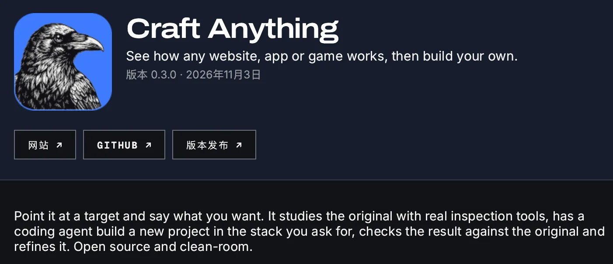
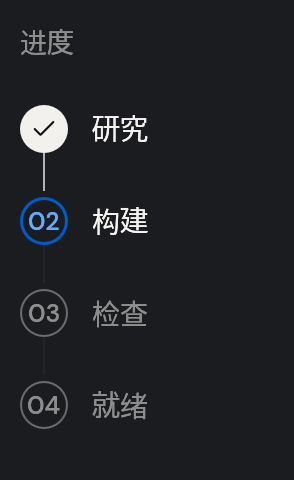
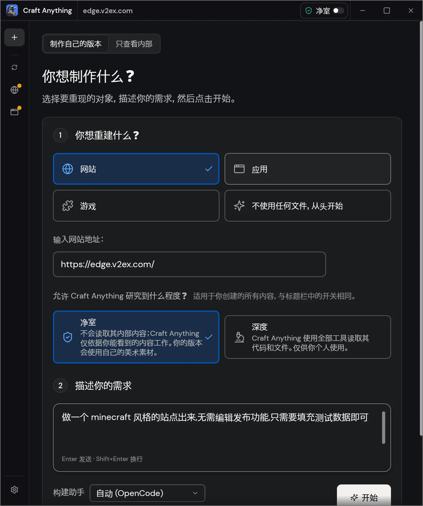
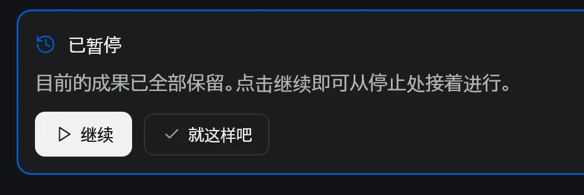

When I wrote about that BlenderCraft joke a while back, ArtCraft was still busy rebuilding all sorts of software in Rust. PhotoCraft for editing photos, FilmCraft for cutting video, WordCraft for writing documents. Watching them come out one after another, I kept wondering how the team got started on each one.
Now there’s Craft Anything. ArtCraft co-founder Michael put the reason right in the title of his Reddit post. According to him, Anthropic blocked REA (Reverse Engineer Anything), which had recently taken off, so the team went ahead and built its own version. Reddit announcement
Michael also said they were releasing the tools they’d used to make the first batch of Craft apps. They’d been serving up dishes for a while. This time they packed up the kitchen tools and the recipe too. Craft Anything source code
I gave it two things to try. First, could it turn V2EX into a forum for Minecraft players? Then I dug out an old Windows utility, Hash.exe, to see if it could make me a Mac version.
First time opening Craft Anything
When I first opened the Mac version, the setup wizard detected Claude Code and OpenCode on my machine.

Luckily, I already had OpenCode set up with DeepSeek. I picked it and got started.
The next screen asked what I wanted to use the tool for. The options included learning how a program works, getting different programs to talk to each other, doing authorized security research, and keeping old software alive. That last one fits the Hash.exe experiment pretty well.

The tools and the recipe
Give Craft Anything a URL or a program file, tell it what you want to keep and what you want to change, and it takes you through four stages.

- Study. Start with the original. For a website, that means screenshots, visible text, and layout. For a desktop app in Deep mode, the Rust engine can inspect the binary, find strings and cross-references, and decompile functions into pseudo-C.
- Build. The coding agent uses what it found and what you asked for to write a new project. For my V2EX experiment, I wanted to keep the forum layout. The content and visual style could change.
- Check. Run the new version and see where it differs. Website checks compare three viewport widths by default and look at some menus and pop-ups. The agent can use those findings for another pass.
- Ready. Open the generated site or app, try it yourself, and ask for more changes if you like. The built-in checks cover different things for websites, apps, and games. Project status and checks
Which tools it can use depends on the mode. Clean room observes from the outside, so for a website it works with what a visitor can see. Deep mode can look at the original’s code and files. The built-in analysis tools can run on their own, and the coding agent comes in when you want a new implementation. Clean room tool allowlist
Giving V2EX a Minecraft makeover
I started with a simple website recreation. I pasted in the V2EX URL, chose Clean room, and asked it for a Minecraft version. To save a few tokens, I told it to skip posting and editing and just make up some data.

I hit Start and watched it go back and forth between visiting pages and taking screenshots. Eventually it actually made me a site called MCRAFT. Same familiar V2EX layout, except now everyone was talking about redstone machines and servers.

Making a Mac version of Hash.exe
After the website, I wanted to try an old Windows app. I thought of Hash.exe, a little hashing utility that’s been around long enough that plenty of developers probably remember using it. I dropped in the .exe to see if it could make me a Mac version.
I chose Deep this time, and it immediately asked whether I wanted to install Ghidra. I could keep going either way. Craft Anything has its own decompiler, though the output is rougher.

It spent quite a while picking through the old program, with decompilation output scrolling by in the logs. When it was done, I actually had a version of Hash that ran on macOS.

It did a decent job with the functionality. The interface was less convincing. The Mac version uses egui, and it got the gray background, raised buttons, and segmented green progress bars in there. You can see it going for that old Windows XP look, but it doesn’t quite feel like it.
“Good enough”
Craft Anything itself still feels a bit rough. I installed the Mac version and got a row of Windows-style minimize, maximize, and close buttons in the top-right corner. The Chinese typography looks a little odd too. The details could use some polish.

Is this another gimmick? After two tries, I still can’t tell. It feels like a skill and a set of tools for things like screenshots and decompilation, bundled into a GUI. A few clicks get the workflow running, which saves you from wiring the tools together yourself. If you’ve already got a Codex or Claude Code setup you’re comfortable with, though, I haven’t seen how much better this would be.
There is one button I like. Pause a build and you get “Continue” on the left and 「就这样吧」 on the right. Roughly, “Let’s leave it at that.”

After a few rounds of asking AI to fix things, there’s always something else you could ask it to change. You just don’t feel like explaining it one more time. That button gets me.
Tested with version 0.3.0 · November 3, 2026